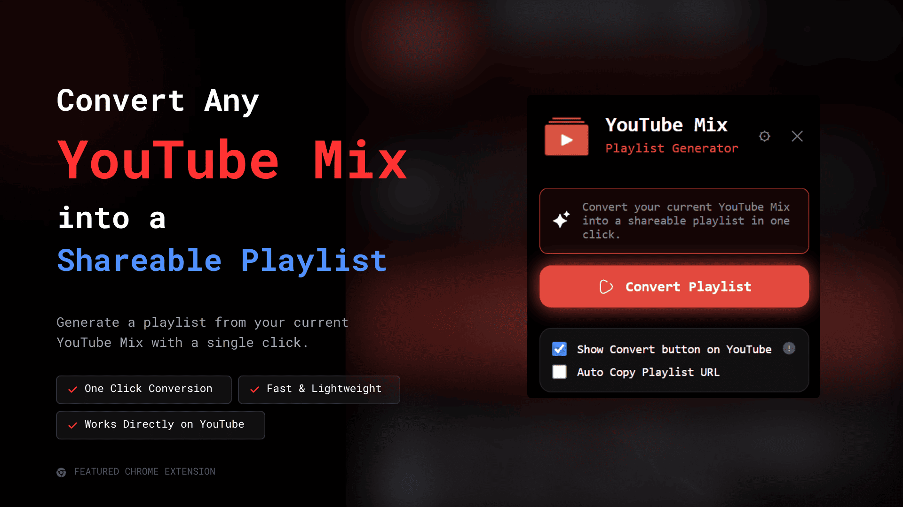

Manifest V3 • Local-only processing
Turn a
YouTube Mix
into a
Shareable playlist.
Extract the songs from a mix, generate a playlist URL, copy it instantly, and share it through QR code without signing in or sending data to a remote service.
No login
Local storage
Recent history
Auto copy

Installation
How to install the extension
Follow these steps to load the unpacked extension into Chrome.
Download the ZIP.
Get the release bundle from the download link.
Extract it.
Unzip the downloaded file to a folder on your computer.
Open Chrome.
Launch Google Chrome on your desktop.
Visit: chrome://extensions
Open the Extensions page in a new browser tab.
Enable Developer Mode.
Turn on Developer Mode in the top-right corner.
Click "Load unpacked".
Use Chrome's unpacked extension loader.
Select the extracted extension folder.
Pick the folder you extracted in step 2.
Your extension is ready to use.
Open a YouTube Mix and start converting playlists.
Features
Everything the extension does well.
Designed around the actual workflow inside the popup and content script.
Convert Playlist
Generate a playlist from the current YouTube Mix in one click.
One-Click Copy
Copy the playlist URL immediately after it is created.
QR Code
Show a QR code so the playlist can be opened on another device.
Recent History
Review the latest generated playlists without leaving the popup.
Themes and Languages
Switch between dark, light, and system themes in multiple languages.
Optional YouTube Button
Show the Convert Playlist button directly on YouTube Mix pages.
How it works
Simple flow, no friction.
Open a YouTube Mix
The extension detects the mix page and prepares the action button.
Convert the mix
Click Convert Playlist to build a shareable playlist URL locally.
Copy or scan
Use the copy button or QR code to share it instantly.
Review history
Return to the recent history list whenever you need an older link.
Privacy
Your data stays in your browser.
No analytics, no tracking, and no external database. Preferences and recent history are stored locally through Chrome Storage.
Read Privacy Policy